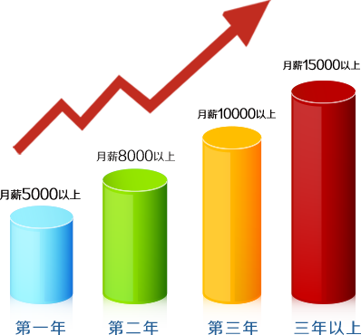

我们的教育模式
学历+技能+职业化=成功就业
计算机应用技术专业是我院重点高职专业之一，以“校企联合培养”的方式确保毕业生高质量就业。计算机应用技术专业一直秉承“教育是服务”的办学宗旨，以“学历+技能+职业化=成功就业”为教育模式致力于培养符合现代企业需求的专业软件开发人才。在教学中注重实践技能和职业素养培养，通过大量的项目实战，培养学生的项目开发能力，通过职业素质课讲授现场模拟等方式培养学生的基本职业素养，通过“时时教育”，开展各类校园及户外拓展活动，培养学生良好的习惯以及生活态度。历届毕业生都受到了用人单位的高度肯定。
结果最重要
毕业生月薪涨幅情况
我国软件业正处于高速发展期，软件市场增长率高，需求量大。随着互联网的普及，互联网对各行各业产生了巨大的影响，传统行业纷纷改变模式，开始与互联网结合，这就造成了互联网行业人才短缺的情况。互联网行业连续多年被评为薪资上涨最快的行业，业内人士平均工资水平每年以30%速度增长。

教育是服务——用阳光的形象引领学生健康成长
Education is a service —— With the image of the sun lead healthy growth.